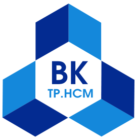

Trường Đại học Bách Khoa - ĐHQG TP.HCM
Khoa Khoa học và Kỹ thuật Máy tính

Bài tập lớn môn Nhập môn điện toán
Đề tài: Tìm hiểu về Deep Learning
Giới thiệu chung
Giải thích một số khái niệm được dùng trong bài báo cáo:
- Artificial Intelligence (Trí tuệ nhân tạo)[1]: là trí tuệ được thể hiện bằng máy móc, trái ngược với trí thông minh tự nhiên của con người và động vật. Thông thường, thuật ngữ
trí tuệ nhân tạo
được áp dụng khi máy móc bắt chước chức năngnhận thức
mà con người tương tác với nhau, chẳng hạn nhưhọc
vàgiải quyết vấn đề
- Machine Learning (học máy)[2] : là một lĩnh vực của trí tuệ nhân tạo. Là sự học của các thuật toán và mô hình toán học mà hệ thống máy tính dùng để dần cải thiện hiệu suất trên một tác vụ nào đó.
- Trích tách đặc điểm (Feature extraction)[3]: Khi làm việc với các bài toán Machine Learning thực tế, nhìn chung chúng ta chỉ có được dữ liệu thô (raw) chưa qua chỉnh sửa, chọn lọc. Chúng ta cần phải tìm một phép biến đổi để loại ra những dữ liệu nhiễu (noise), và để đưa dữ liệu thô với số chiều khác nhau về cùng một chuẩn (cùng là các vector hoặc ma trận). Dữ liệu chuẩn mới này phải đảm bảo giữ được những thông tin đặc trưng (features) cho dữ liệu thô ban đầu. Không những thế, tùy vào từng bài toán, ta cần thiết kế những phép biến đổi để có những features phù hợp. Quá trình quan trọng này được gọi là Feature Extraction.
- Supervised learning(Học giám sát) [4] là thuật toán dự đoán đầu ra (outcome) của một dữ liệu mới (new input) dựa trên các cặp (input, outcome) đã biết từ trước. Cặp dữ liệu này còn được gọi là (data, label), tức (dữ liệu, nhãn). Supervised learning là nhóm phổ biến nhất trong các thuật toán Machine Learning.
- Unsupervised Learning (Học không giám sát) [5]: Trong thuật toán này, chúng ta không biết được outcome hay nhãn mà chỉ có dữ liệu đầu vào. Thuật toán unsupervised learning sẽ dựa vào cấu trúc của dữ liệu để thực hiện một công việc nào đó, ví dụ như phân nhóm (clustering) hoặc giảm số chiều của dữ liệu (dimension reduction) để thuận tiện trong việc lưu trữ và tính toán. Một cách toán học, Unsupervised learning là khi chúng ta chỉ có dữ liệu vào X mà không biết nhãn Y tương ứng.
- Mạng nơ-ron nhân tạo (Artificial Neural Network - ANN)[6] là hệ thống máy tính mơ hồ lấy cảm hứng từ mạng thần kinh sinh học tạo thành bộ não động vật. Bản thân mạng nơ-ron không phải là một thuật toán, mà là một khuôn khổ cho nhiều thuật toán học máy khác nhau để làm việc cùng nhau và xử lý các dữ liệu đầu vào phức tạp.
- Mạng nơ-ron hồi quy (Recurrent Neural Network -RNN)[7] là một lớp của mạng nơron nhân tạo trong đó các kết nối giữa các nút tạo thành một đồ thị có hướng dọc theo một chuỗi. Điều này cho phép nó thể hiện hành vi động thái thời gian trong một chuỗi thời gian.
- Mạng bộ nhớ dài-ngắn (Long Short Term Memory networks)[8], thường được gọi là LSTM - là một dạng đặc biệt của RNN, nó có khả năng học được các phụ thuộc xa. LSTM được giới thiệu bởi Hochreiter & Schmidhuber (1997), và sau đó đã được cải tiến và phổ biến bởi rất nhiều người trong ngành. Chúng hoạt động cực kì hiệu quả trên nhiều bài toán khác nhau nên dần đã trở nên phổ biến như hiện nay.
- Thị giác máy tính (Computer Vision)[9] là một lĩnh vực liên ngành đề cập đến cách máy tính có thể được thực hiện để đạt được sự hiểu biết cấp cao từ những hình ảnh kỹ thuật số hoặc video. Từ quan điểm của kỹ thuật, nó tìm cách tự động hoá các tác vụ mà hệ thống thị giác của con người có thể làm.
- DeepDream[10] là một chương trình thị giác máy tính được tạo ra bởi kỹ sư của Google Alexander Mordvintsev, sử dụng mạng nơ-ron xoắn để tìm và cải thiện các mẫu hình ảnh qua thuật toán pareidolia, từ đó tạo ra một vẻ ngoài ảo giác giống như mơ trong các hình ảnh đã được xử lý quá mức.
Nội dung
Trước khi tìm hiểu về khái niệm, chúng ta hãy xem vị trí của Deep Learning đối với các lĩnh vực khác qua hình sau:
Hình 1: Vị trí của Deep Learning
Dựa theo hình trên, ta thấy được Deep Learning đóng vai trò cốt lõi, là một lĩnh vực được bao hàm bởi Machine Learning và Artifical Intelligence - nghĩa là nó sẽ nghiên cứu chuyên sâu hơn cả. Để hiểu rõ xem Deep Learning là gì, chúng ta đi vào nội dung đầu tiên.
- Deep Learning là gì ?
- Sử dụng một tầng (cascade) nhiều lớp các đơn vị xử lý phi tuyến (nonlinear processing units) để trích tách đặc điểm (feature extraction) và chuyển đổi. Mỗi lớp kế tiếp dùng đầu ra từ lớp trước làm đầu vào.
- Học giám sát (mô hình phân loại) hoặc không cần giám sát (mô hình phân tích).
- Học nhiều cấp độ đại diện tương ứng với các mức độ trừu tượng khác nhau; các mức độ hình thành một hệ thống phân cấp của các khái niệm.
- Lịch sử hình thành và phát triển
- Lịch sử hình thành
- Sự phát triển
- Một số kiến trúc nổi bật của Deep Learning[11]
- Các mạng neuron sâu
- Mạng niềm tin sâu (Deep belief network)
- Mạng nơ ron tích chập (Convolutional Neural Networks)
- Các mạng niềm tin sâu tích chập
- Mạng neuron lưu trữ và truy xuất bộ nhớ lớn
- Mạng lập trình sâu (Deep coding network)
- Một số thành tựu nổi bật gần đây của Deep Learning
- Google dịch (Google Neural Machine Translation)[14]
- Nhận diện hình ảnh[15]
- Đọc khẩu hình (Lip Reading)[14][16]
- Phát hiện các loại bệnh hiếm gặp[16]
Deep Learning có thể được định nghĩa bằng nhiều cách khác nhau. Một trong những định nghĩa phổ biến nhất: Deep Learning[11] là một lớp của các thuật toán máy học (Machine Learning) mà trong đó:
Hình 2: Mô hình Deep Learning và sự khác biệt cơ bản với Machine Learning
Hình 3: Cách Deep Learning và Machine Learning thực hiện nhận diện hình ảnh chú chó
Deep Learning được nhắc đến nhiều trong những năm gần đây, nhưng những nền tảng cơ bản đã xuất hiện từ rất lâu …

Hình 4: Timeline
Một trong những nền móng đầu tiên của Neural Network và Deep Learning là perceptron learning algorithm (hoặc gọn là perceptron). Perceptron là một thuật toán supervised learning giúp giải quyết bài toán phân lớp nhị phân, được khởi nguồn bởi Frank Rosenblatt năm 1957 trong một nghiên cứu được tài trợ bởi Văn phòng nghiên cứu hải quân Hoa Kỳ (U.S Office of Naval Research – từ một cơ quan liên quan đến quân sự). Thuật toán perceptron được chứng minh là hội tụ nếu hai lớp dữ liệu là linearly separable. Với thành công này, năm 1958, trong một hội thảo, Rosenblatt đã có một phát biểu gây tranh cãi. Từ phát biểu này, tờ New York Times đã có một bài báo cho rằng perceptron được Hải quân Hoa Kỳ mong đợi “có thể đi, nói chuyện, nhìn, viết, tự sinh sản, và tự nhận thức được sự tồn tại của mình”. (Chúng ta biết rằng cho tới giờ các hệ thống nâng cao hơn perceptron nhiều lần vẫn chưa thể).
Mặc dù thuật toán này mang lại nhiều kỳ vọng, nó nhanh chóng được chứng minh không thể giải quyết những bài toán đơn giản. Năm 1969, Marvin Minsky và Seymour Papert trong cuốn sách nổi tiếng Perceptrons đã chứng minh rằng không thể ‘học’ được hàm số XOR khi sử dụng perceptron. Phát hiện này làm choáng váng giới khoa học thời gian đó (bây giờ chúng ta thấy việc này khá hiển nhiên). Perceptron được chứng minh rằng chỉ hoạt động nếu dữ liệu là linearly separable.
Phát hiện này khiến cho các nghiên cứu về perceptron bị gián đoạn gần 20 năm. Thời kỳ này còn được gọi là Mùa đông AI thứ nhất (The First AI winter).
MLP và Backpropagation ra đời (80s)
Geoffrey Hinton tốt nghiệp PhD ngành Neural Networks năm 1978. Năm 1986, ông cùng với hai tác giả khác xuất bản một bài báo khoa học trên Nature với tựa đề “Learning representations by back-propagating errors”. Trong bài báo này, nhóm của ông chứng minh rằng neural nets với nhiều hidden layer (được gọi là multi-layer perceptron hoặc MLP) có thể được huấn luyện một cách hiệu quả dựa trên một quy trình đơn giản được gọi là backpropagation.
Hình 5: Geoffrey Hinton
Mùa đông AI thứ hai (90s - đầu 2000s)
Các mô hình tương tự được kỳ vọng sẽ giải quyết nhiều bài toán image classification khác. Tuy nhiên, không như các chữ số, các loại ảnh khác lại rất hạn chế vì máy ảnh số chưa phổ biến tại thời điểm đó. Ảnh được gán nhãn lại càng hiếm. Trong khi để có thể huấn luyện được mô hình convnets, ta cần rất nhiều dữ liệu huấn luyện. Ngay cả khi dữ liệu có đủ, một vấn đề nan giải khác là khả năng tính toán của các máy tính thời đó còn rất hạn chế.
Một hạn chế khác của các kiến trúc MLP nói chung là hàm mất mát không phải là một hàm lồi. Việc này khiến cho việc tìm nghiệm tối ưu toàn cục cho bài toán tối ưu hàm mất mát trở nên rất khó khăn. Một vấn đề khác liên quan đến giới hạn tính toán của máy tính cũng khiến cho việc huấn luyện MLP không hiệu quả khi số lượng hidden layers lớn lên. Vấn đề này có tên là vanishing gradient.
Những hạn chế này khiến cho neural nets một lần nữa rơi vào thời kỳ băng giá. Vào thời điểm những năm 1990 và đầu những năm 2000, neural nets dần được thay thế bởi support vector machines –SVM. SVMs có ưu điểm là bài toán tối ưu để tìm các tham số của nó là một bài toán lồi – có nhiều các thuật toán tối ưu hiệu quả giúp tìm nghiệm của nó. Các kỹ thuật về kernel cũng phát triển giúp SVMs giải quyết được cả các vấn đề về việc dữ liệu không phân biệt tuyến tính.
Nhiều nhà khoa học làm machine learning chuyển sang nghiên cứu SVM trong thời gian đó, trừ một vài nhà khoa học cứng đầu…
Cái tên được làm mới – Deep Learning (2006)
Năm 2006, Hinton một lần nữa cho rằng ông biết bộ não hoạt động như thế nào, và giới thiệu ý tưởng của tiền huấn luyện không giám sát (unsupervised pretraining) thông qua deep belief nets (DBN). DBN có thể được xem như sự xếp chồng các unsupervised networks đơn giản như restricted Boltzman machine hay autoencoders.
Một trong những hạn chế đã đề cập của MLP là vấn đề vanishing gradient. Những ma trận trọng số ứng với các layer đầu của network rất khó được huấn luyện vì đạo hàm của hàm mất mát theo các ma trận này nhỏ. Với ý tưởng của DBN, các ma trận trọng số ở những hidden layer đầu tiên được tiền huấn luyện (pretrained). Các trọng số được tiền huấn luyện này có thể coi là giá trị khởi tạo tốt cho các hidden layer phía đầu. Việc này giúp phần nào tránh được sự phiền hà của vanishing gradient.
Kể từ đây, Neural Networks với nhiều hidden layer được đổi tên thành Deep Learning.
Năm 2010, giáo sư Fei-Fei Li, một giáo sư ngành computer vision đầu ngành tại Stanford, cùng với nhóm của bà tạo ra một cơ sở dữ liệu có tên ImageNet với hàng triệu bức ảnh thuộc 1000 lớp dữ liệu khác nhau đã được gán nhãn. Dự án này được thực hiện nhờ vào sự bùng nổ của internet những năm 2000 và lượng ảnh khổng lồ được upload lên internet thời gian đó. Các bức ảnh này được gán nhãn bởi rất nhiều người (được trả công).
Đột phá (2012)
Năm 2012, cũng tại ILSVRC, Alex Krizhevsky, Ilya Sutskever, và Geoffrey Hinton (lại là ông) tham gia và đạt kết quả top-5 error rate 16 phần trăm. Kết quả này làm sững sờ giới nghiên cứu thời gian đó. Mô hình là một Deep Convolutional Neural Network, sau này được gọi là AlexNet.
Một trong những yếu tố quan trọng nhất giúp AlexNet thành công là việc sử dụng GPU (card đồ hoạ) để huấn luyện mô hình. GPU được tạo ra cho game thủ, với khả năng chạy song song nhiều lõi, đã trở thành một công cụ cực kỳ phù hợp với các thuật toán Deep Learning, giúp tăng tốc thuật toán lên nhiều lần so với CPU.
Sau AlexNet, tất cả các mô hình giành giải cao trong các năm tiếp theo đều là các deep networks (ZFNet 2013, GoogLeNet 2014, VGG 2014, ResNet 2015). Xu thế chung có thể thấy là các mô hình càng ngày càng sâu.
Hình 6: Kết quả ILSVRC qua các năm
Những công ty công nghệ lớn cũng để ý tới việc phát triển các phòng nghiên cứu Deep Learning trong thời gian này. Rất nhiều các ứng dụng công nghệ đột phá đã được áp dụng vào cuộc sống hàng ngày. Cũng kể từ năm 2012, số lượng các bài báo khoa học về Deep Learning tăng lên theo hàm số mũ. Các blog về Deep Learning cũng tăng lên từng ngày.
Có một lượng rất lớn các biến thể của kiến trúc sâu. Hầu hết chúng là nhánh sinh ra từ một số kiến trúc cha ban đầu. Không phải là luôn luôn có thể so sánh hiệu suất của nhiều kiến trúc cùng với nhau, vì chúng không phải là tất cả đánh giá trên cùng một tập dữ liệu. Học sâu học là một lĩnh vực phát triển nhanh, và các kiến trúc, biến thể, hoặc các thuật toán mới xuất hiện mỗi vài tuần.
Mạng neuron sâu (DNN-Deep Neural Network) là một mạng neuron nhân tạo (ANN) với nhiều đơn vị lớp ẩn giữa lớp đầu vào và đầu ra. Tương tự như các ANN nông, các DNN nông có thể mô hình mối quan hệ phi tuyến phức tạp. Các kiến trúc DNN, ví dụ như để phát hiện và phân tích đối tượng tạo ra các mô hình hỗn hợp trong đó đối tượng này được thể hiện như một thành phần được xếp lớp của các hình ảnh nguyên thủy. Các lớp phụ cho phép các thành phần của các đặc điểm từ các lớp thấp hơn, đem lại tiềm năng của mô hình hóa dữ liệu phức tạp với các đơn vị ít hơn so với một mạng lưới nông thực hiện tương tự như vậy.
Hình 7: Cấu trúc mạng neuron sâu
Các DNN thường được thiết kế như các mạng nuôi tiến, nhưng nghiên cứu gần đây đã áp dụng thành công kiến trúc học sâu đối với các mạng nơ ron tái phát cho các ứng dụng chẳng hạn như mô hình hóa ngôn ngữ. Các mạng neuron sâu tích chập (CNN) được sử dụng trong thị giác máy tính nơi thành công của chúng đã được ghi nhận. Gần đây hơn, các CNN đã được áp dụng để mô hình hóa âm thanh cho nhận dạng giọng nói tự động (ASR), nơi chúng đã cho thấy sự thành công trong các mô hình trước đó.
Một mạng niềm tin sâu (DBN) là một mô hình xác suất thể sinh, tạo thành bởi nhiều đơn vị ẩn nhiều lớp. Nó có thể được coi là một hàm hợp các mô-đun học đơn giản tạo thành mỗi lớp.
Hình 8: Cấu trúc một mạng niềm tin sâu
Một CNN gồm có một hoặc nhiều hơn các lớp tích chập với các lớp đầy đủ kết nối (đáp ứng phù hợp với những mạng neuron nhân tạo tiêu biểu) trên đỉnh. Nó cũng sử dụng trọng số gắn liền và các lớp thăm dò. Kiến trúc này cho phép các CNN tận dụng lợi thế của cấu trúc 2D của dữ liệu đầu vào. So với những kiến trúc sâu khác, mạng neuron tích chập đang bắt đầu thể hiện kết quả vượt trội trong các ứng dụng hình ảnh và giọng nói. Chúng cũng có thể được huấn luyện với tiêu chuẩn truyền ngược. CNN dễ dàng được đào tạo hơn các mạng nơ ron sâu nuôi tiến thông thường khác, và có ít thông số ước tính hơn, khiến cho chúng trở thành một kiến trúc rất hấp dẫn để sử dụng. Các ví dụ về ứng dụng trong Thị Giác máy tính bao gồm DeepDream.
Hình 9: Ứng dụng hình ảnh trong CNN
Sử dụng mạng niềm tin sâu (CDBN) là một thành tựu gần đây của học sâu. Các CDBN có cấu trúc rất giống với một mạng neuron tích chập và được huấn luyện tương tự như các mạng niềm tin sâu. Vì vậy, chúng khai thác cấu trúc 2D của hình ảnh, giống như CNN làm, và làm cho việc sử dụng đào tạo trước giống như mạng niềm tin sâu. Chúng quy định một cấu trúc chung mà có thể được sử dụng trong nhiều tác vụ xử lý hình ảnh và tín hiệu. Gần đây, nhiều kết quả benchmark (tiêu chuẩn) dựa trên tập dữ liệu hình ảnh chuẩn như CIFAR đã được thu được kết quả bằng cách sử dụng CDBN.
Mạng nơ ron lưu trữ và truy xuất bộ nhớ lớn (LAMSTAR) là các mạng nơ ron học sâu nhanh gồm nhiều lớp mà có thể sử dụng đồng thời nhiều bộ lọc. Các bộ lọc này có thể là phi tuyến, ngẫu nhiên, logic, không cố định, hoặc thậm chí không có tính phân tích. Chúng có động lực sinh học và sự học hỏi liên tục.
LAMSTAR đã được áp dụng cho nhiều dự đoán y tế và tài chính (xem Graupe, 2013 Phần 9C), bộ lọc thích nghi nhiễu nhận dạng giọng nói với tiếng ồn không xác định, nhận dạng ảnh tĩnh (Graupe, 2013 Phần 9D), nhận dạng ảnh video, bảo mật phần mềm, điều khiển thích nghi của các hệ thống phi tuyến, vv. LAMSTAR có tốc độ tính toán nhanh hơn nhiều và có lỗi hơi ít hơn so với một mạng nơ ron tích chập dựa trên các bộ lọc hàm-ReLU và thăm dò max, trong một nghiên cứu nhận dạng ký tự so sánh.
Hình 10: Kiến trúc mạng LAMSTAR
Mạng lập trình (DPCN) là một chương trình lập trình tiên đoán, trong đó thông tin từ trên xuống được sử dụng để điều chỉnh theo kinh nghiệm của những cái trước đó cần thiết cho một thủ tục suy luận từ dưới lên bằng các phương tiện của một mô hình thể sinh kết nối cục bộ sâu.
Gần 2 năm trước, Google đã công bố sự ra mắt của một mô hình mới cho Google Translate. Họ đã mô tả chi tiết kiến trúc mạng - Mạng nơ-ron hồi quy (Recurrent Neural Network - RNN).
Kết quả: gia tăng tính chính xác của Google dịch khoảng 55-85% nhờ vào tập dữ liệu khổng lồ mà Google có.
Mục tiêu của công nghệ nhận diện ảnh là nhận biết và xác định các đối tượng trong ảnh cũng như hiểu được nội dung và ngữ cảnh trong đó.
Ví dụ trên cho thấy dịch vụ nhận diện và xác định khuôn mặt của AlchemyVision có khả năng phân biệt hai khuôn mặt tương tự nhau giữa nam diễn viên Will Ferrell và tay trống của Red Hot Chili Peppers, Chad Smith. Công nghệ nhận diện hình ảnh cũng được đưa vào Facebook để gợi ý người dùng tag mặt bạn bè hay ứng dụng vào khoa học tội phạm và điều tra.
Google Deepmind, cộng tác cùng Trường Đại học Oxford, đã báo cáo trong bài báo của họ “Lip Reading Sentences in the Wild” về cách mà mô hình của họ có thể vượt qua được người đọc khẩu hình chuyên nghiệp của đài BBC, sau khi được “huấn luyện” qua tập dữ liệu trên truyền hình.
Có 100 000 câu, âm thanh và video trong tập dữ liệu, với mô hình: LSTM trên âm thanh và CNN + LSTM trên video. Hai vectơ trạng thái này được nạp vào LSTM cuối cùng, tạo ra kết quả (các ký tự).

Các loại dữ liệu đầu vào khác nhau được sử dụng trong quá trình đào tạo: âm thanh, video và âm thanh + video. Nói cách khác, nó là một mô hình “đa kênh” (omnichannel).
Ngoài ra, Đại học Washington đã thực hiện một nghiên cứu nghiêm túc trong việc tạo ra những chuyển động môi của cựu tổng thống Mỹ Obama. Sự lựa chọn rơi vào Obama do số lượng lớn các bản thu âm trực tuyến của ngài ấy (với hơn 17 giờ video HD).
Bạn có thể thấy những kết quả đáng ngạc nhiên này. Vì thế, thậm chí là những video có mặt ngài ấy, chúng ta cũng đừng vội tin chúng!
Gần đây, trí tuệ nhân tạo Watson của IBM đã phát hiện ra một loại bệnh mà các bác sĩ đã bó tay không thể tìm ra ở một nữ bệnh nhân. Bằng cách so sánh bộ gen của người phụ nữ này với hơn 20 triệu kết quả nghiên cứu bệnh khác, Watson đã đưa ra kết quả là một chứng leukemia cực kỳ hiếm gặp chỉ trong 10 phút.
Hạn chế
Ưu việt là vậy nhưng deep learning không phải là không có những giới hạn nhất định.
- Deep learning luôn đòi hỏi một lượng dữ liệu đầu vào khổng lồ để máy tính học hỏi. Quy trình này mất nhiều thời gian và sức mạnh xử lý mà chỉ có các server cỡ lớn mới làm được. Nếu không có đủ dữ liệu đầu vào, hay có đủ dữ liệu nhưng không đủ sức mạnh để xử lý, thì mọi thứ không thể diễn ra đúng như ý định, kết quả máy tính đưa ra do đó cũng không chính xác.
- Deep learning vẫn chưa thể nhận biết được những thứ phức tạp. hay tương tự nhau. Vì hiện chưa có kĩ thuật nào đủ tốt để trí tuệ nhân tạo có thể rút ra những kết luận đó một cách logic bởi chúng chưa có được khả năng nhận biết như con người.
Tương lai
- Deep learning đang ngày càng cho thấy một tương lai đầy hứa hẹn với ứng dụng vào điều khiển xe tự lái hay robot quản gia. Mặc dù các sản phẩm này vẫn còn nhiều hạn chế nhưng những thứ chúng làm được hiện nay thực sự rất khó tưởng tượng nổi chỉ vài năm trước đây; tốc độ nâng cấp cũng cao chưa từng thấy.
- Khả năng phân tích dữ liệu lớn và sử dụng Deep Learning vào các hệ thống máy tính có thể tự thích nghi với những gì chúng tiếp nhận mà không cần đến bàn tay lập trình của con người sẽ nhanh chóng mở đường cho nhiều đột phá trong tương lai.
- Những đột phá này có thể là việc thiết kế ra những trợ lý ảo, các hệ thống xe tự lái hay sử dụng vào thiết kế đồ họa, sáng tác nhạc, cho đến phát triển các nguyên liệu mới giúp robot thấu hiểu thế giới xung quanh hơn.
- Chính vì tính thương mại cao mà các công ty lớn, đặc biệt là Google, Facebook luôn ưu tiên các startup về robot và Deep Learning trong danh sách thâu tóm của mình.
Nhận xét, kết luận
- Deep Learning đã, đang và ngày càng phát triển không ngừng, những ứng dụng của nó sẽ góp phần thay đổi cách chúng ta sống và làm việc trong tương lai gần.
- Đây là một công nghệ có tính thực tiễn cao, có khả năng thích nghi, tự thay đổi nên rất có ích cho con người đồng thời đặt ra nhiều vấn đề mới trong tương lai, bởi khi một thứ có tư duy giống con người, nó sẽ có “tư duy làm chủ mọi thứ”. Đó là thách thức đặt ra đối với chúng ta.
- Công nghệ Deep Learning sẽ giúp chúng ta rất nhiều, song nó sẽ thay thế một phần hay hoàn toàn các công việc của con người, khiến nguồn lao động lãng phí, dẫn đến nhiều hệ lụy.
⇒ Hãy cẩn trọng, bởi công nghệ tuy rất tuyệt vời nhưng cũng đầy tham vọng và thách thức!
Tài liệu tham khảo
Wikipedia. Artificial Intelligence, https://en.wikipedia.org/wiki/Artificial_intelligence, xem 27/11/2018
Wikipedia. Machine Learning, https://en.wikipedia.org/wiki/Machine_learning, xem 27/11/2018
Vũ Hữu Tiệp (2017). Machine Learning cơ bản, https://machinelearningcoban.com/general/2017/02/06/featureengineering/, xem 01/12/2018
Vũ Hữu Tiệp (2016). Machine Learning cơ bản, https://machinelearningcoban.com/2016/12/27/categories/#supervised-learning-hoc-co-giam-sat, xem 01/12/2018
Vũ Hữu Tiệp (2016). Machine Learning cơ bản, https://machinelearningcoban.com/2016/12/27/categories/#unsupervised-learning-hoc-khong-giam-sat, xem 01/12/2018
Wikipedia. Artificial Neural Network https://en.wikipedia.org/wiki/Artificial Neural Network, xem 01/12/2018
Wikipedia. Recurrent Neural Network https://en.wikipedia.org/wiki/Recurrent_neural_network, xem 01/12/2018
Do Minh Hai (2017). What is LSTM, Github, xem 01/12/2018
Wikipedia. Deep Dream, https://en.wikipedia.org/wiki/DeepDream, xem 30/11/2018
Wikipedia. Computer Vision, https://en.wikipedia.org/wiki/Computer_vision, xem 30/11/2018
Wikipedia. Deep Learning, https://en.wikipedia.org/wiki/Deep_learning, xem 27/11/2018
Li Deng & Dong Yu (2014), "Deep Learning: Methods and Applications", Foundations and Trends® in Signal Processing: Vol. 7: No. 3–4, pp 197-387, NOW Publishers, May 2014.
Vũ Hữu Tiệp. Machine Learning cơ bản, https://machinelearningcoban.com/2018/06/22/deeplearning/, xem 30/11/2018
Blog Stats and Bots. Deep Learning Achievements, https://blog.statsbot.co/deep-learning-achievements-4c563e034257, xem 02/12/2018
Genk. Giải ngố về Deep Learning, http://genk.vn/giai-ngo-ve-deep-learning-cong-nghe-dang-giup-cho-tri-tue-nhan-tao-sanh-duoc-voi-con-nguoi-20160816002755886.chn, xem 02/12/2018
J. S. Chung, A. Senior, O. Vinyals, A. Zisserman, Lip Reading Sentences in the Wild, oral presentation, IEEE Conference on Computer Vision and Pattern Recognition, 2017.